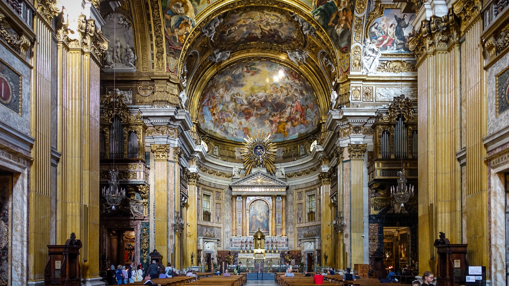

Oratorios and cantatas
In religious music, the Baroque period introduced new genres, notably the oratorio and the cantata. These genres were used by the various churches (Catholic, Lutheran) as a means of conveying their doctrines.
Oratorys were composed by setting religious stories to music, usually based on texts from the Bible, from both the Old and New Testaments. In oratorys, unlike opera, there is no stage performance; instead, they are simply performed by an orchestra, with choirs and solo singers, who narrate the story on stage without any scenery or action.
The cantata is a musical form written to be sung (unlike the sonata, which is written to be played). It is a vocal work that combines solo singing, choruses and instrumental accompaniment. It is like a miniature opera, but with two key differences: like the oratorio, it has no theatrical performance (there are no sets, costumes or staging), but it is much shorter.

WE LISTEN AND WE DON'T JUDGE: ORATORIOS & CANTATAS
🎧 Listening 1
Listen carefully to the following musical excerpt: Handel – ‘Hallelujah!’. In it, several soloists and a large choir, accompanied by the orchestra, tell a religious story taken from the Bible. Bearing this in mind and considering the structure, answer the following questions:
Haendel - The Messaiah - HWV 56 Part II: Chorus - Hallelujah
- Which Baroque musical form does this piece belong to?
- If we were watching this work live in a theatre, what differences would you notice at first glance on stage compared to an opera performance?
🎧 Listening 2
You are about to hear a complete vocal work: Bach’s Jesu, Joy of Man’s Desiring. Although it shares the absence of theatrical performance (no costumes or sets) with other musical forms, it is characterised by being a short composition, like a ‘miniature opera’.
Bach - Cantata BWV 147 - Jesu, Joy of Man’s Desiring
- Identify the type of musical form you have just heard.
- Briefly explain the main difference between the term used to describe this work (cantata) and the term ‘sonata’.